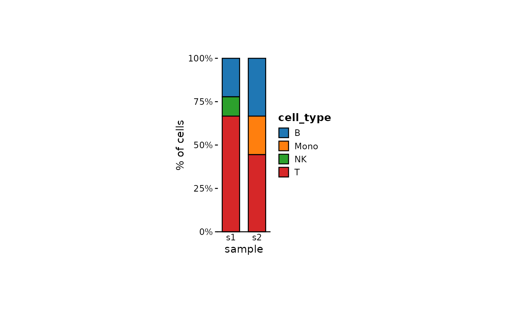

Stacked bars of how the cells (or genes, peaks...) of each
bar are split among groups: one bar per level of `split.by`
(e.g. condition or sample), one coloured segment per level of
`group.by` (e.g. cell type), optionally one panel per level of
`facet.by`. Neighbouring bars of a panel are joined by bands
in a lighter tone of each group's colour (`connect`), so that a
shift in a group reads at a glance. Bars have a fixed width, gap and
length in inches, so that a figure keeps its proportions
whatever the number of bars; save it with
save_plot; the table behind it is returned by
export_source_data.
Usage
plot_composition_bars(
object,
group.by,
split.by = NULL,
facet.by = NULL,
value = c("percent", "fraction", "count"),
unit = "cells",
cells = NULL,
order.by = NULL,
flip = FALSE,
connect = c("none", "curve", "straight"),
connect.lighten = 0.8,
label = FALSE,
label.min = 0.05,
show.n = FALSE,
value.axis.line = FALSE,
cols = NULL,
facet.cols = NULL,
bar.width = 0.25,
bar.gap = 0.125,
bar.length = 2.5,
border.width = 1,
panel.spacing = 0.2,
legend.position = c("right", "left", "top", "bottom", "inside", "none"),
legend.ncol = NULL,
legend.title = NULL,
bg = "transparent"
)Arguments
- object
A Seurat object, or a table with one row per cell, gene, peak... with categorical columns (e.g. its metadata, a gene or peak annotation): anything
as.data.frame()converts, e.g. a data frame, tibble, data.table, BioconductorDataFrameorGRanges- group.by
Column of the groups, the coloured segments (e.g. cell type)
- split.by
Column giving one bar per level (e.g. condition or sample), or NULL (default) for one bar of all cells. Each bar's segments are shares of that bar's cells
- facet.by
Column giving one panel per level (e.g. condition when the bars are samples), or NULL (default). A panel holds only the bars with cells in it
- value
What the value axis shows: "percent" (default; 0-100%), "fraction" (0-1) or "count" (the number of cells; bars of different lengths)
- unit
What a row is, for the axis title and messages: "cells" (default), "genes", "peaks"...
- cells
Cells (rows) to use, as names or indices, e.g. one lineage: shares are then of that subset. If NULL (default), all
- order.by
A group: the bars of each panel are sorted by decreasing share of that group. If NULL (default), bars follow the levels of `split.by`
- flip
Whether to draw horizontal bars (first bar on top). Default is FALSE (vertical bars)
- connect
Whether and how to join neighbouring bars of a panel with bands in a light tone of each group's colour: "none" (default; no bands), "curve" (smooth, as in alluvial plots) or "straight"
- connect.lighten
How light the bands are: the share of white mixed into each group's colour, from 0 (the group's colour) to 1 (white). Default 0.8, light enough to stay behind the bars
- label
Whether to write each segment's value inside it (black, or white on a dark segment), where the text fits in the segment. Default is FALSE
- label.min
Smallest share of a bar whose segment is labelled, default 0.05
- show.n
Whether to write the number of cells of each bar beyond its end. Default is FALSE
- value.axis.line
Whether to draw the line of the value axis (%, fraction or count). Default is FALSE: its ticks and labels only
- cols
Colours of the groups: NULL (default) for the colours
DimPlot_bioToolkitgives them, a qualitative palette name, or colours named by group- facet.cols
Colours of the bars under the panel names: NULL (default) for black, a qualitative palette name, or colours named by level of `facet.by`
- bar.width
Width of a bar in inches, default 0.25
- bar.gap
Gap between neighbouring bars in inches, where the bands are drawn; default 0.125
- bar.length
Length of the value axis in inches (a whole bar in percent or fraction), default 2.5
- border.width
Width of the black borders around the bars and between their segments, in points; default 1. 0 for no borders
- panel.spacing
Gap between panels in inches, default 0.2
- legend.position
Position of the legend, one of "right" (default), "left", "top", "bottom", "inside" or "none"
- legend.ncol
Number of legend columns. If NULL (default), ggplot2 chooses based on the number of groups and the position
- legend.title
Title of the legend. If NULL (default), the name of `group.by`; "" for no title
- bg
Background colour, default is "transparent"
Details
Shares are within each bar: the segments of a bar add up to 100%. To see instead which bars make up each group (e.g. which samples make up each cluster, a check of integration), swap `group.by` and `split.by`.
Pooling the cells of several samples into one bar lets a large sample count more than a small one; `split.by = "sample"` with `facet.by = "condition"` shows every sample.
The plot shows where composition differs, not whether the difference is significant: that needs a test on samples, not cells (e.g. propeller, scCODA).
The source data (export_source_data) hold one row per
segment: the panel, bar, group, its `count`, the bar's `total`, the share
`prop`, the `value` drawn and the segment's ends on the value axis
(`lower`, `upper`).
Examples
meta <- data.frame(
cell_type = rep(c("T", "B", "NK", "T", "B", "Mono"), times = c(30, 10, 5, 20, 15, 10)),
sample = rep(c("s1", "s2"), times = c(45, 45)),
condition = rep(c("Control", "Treated"), times = c(45, 45))
)
plot_composition_bars(meta, group.by = "cell_type", split.by = "sample")

if (FALSE) { # \dontrun{
# One bar per sample, one panel per condition
p <- plot_composition_bars(
obj,
group.by = "cell_type",
split.by = "sample",
facet.by = "condition",
show.n = TRUE
)
save_plot(p, "composition_bars.pdf")
# Any table: the direction of genes per cell type
plot_composition_bars(de, group.by = "direction", split.by = "cell_type", unit = "genes")
} # }